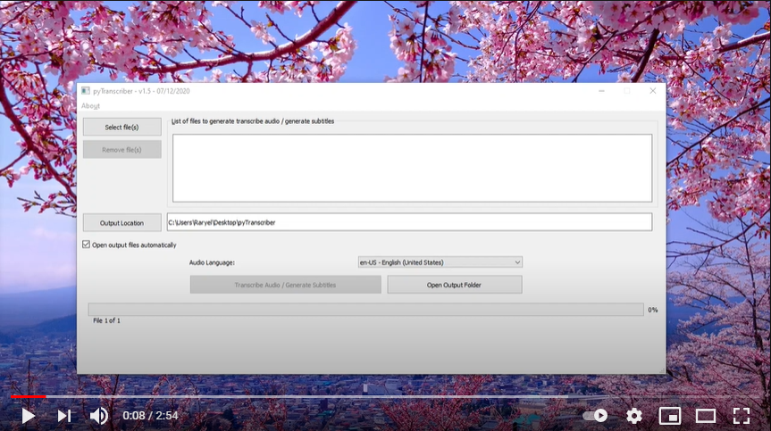

pyTranscriber
pyTranscriber is an application that can be used to generate automatic transcription / automatic subtitles for audio/video files through a friendly graphical user interface. The hard work of speech recognition is made by the Google Speech Recognition API using Autosub.


pyTranscriber is a improved version of my previous project JAutosub (Java), created because of the limitations, issues, and overhead of mixing this 2 different languages on a single project.
The app by default outputs the subtitles as .srt and the transcribed audio on the user interface as well as .txt files. SRT Files can be edited using Aegisub.
Internet connection is REQUIRED because it uses the Google Cloud Speech Server for the job, in the same way as the Youtube Automatic Subtitles.
IMPORTANT: As speech recognition technology is still not fully accurate, the accuracy of the result can vary a lot, depending on many factors, mainly the quality/clarity of the audio. Ideally the audio input should not have background noise, sound effects or music. If there is a single speaker and he speaks in a clear and slow speed seems that the recognition is much more accurate. Sometimes, under ideal/lucky conditions it is possible to get a accuracy result close to 95%.


Release Notes:
07/12/2020 - v1.5
* Since v1.4.1 COMPATIBLE WITH MACOS CATALINA.
* Upgraded to latest Python and libraries
* Minor GUI tweaks and fixes.
06/12/2020 - v1.4.1:
* Added support for MacOS Catalina!
29/01/2020 - v1.4:
* Fixed crash when exporting txt file for languages with special characters, specially chinese, on Windows system. Thanks for KY Poon for reporting!
18/10/2019 - v1.3:
* Added option for not opening output transcription files automatically after finish
* Fixed bug with canceling during batch processing (only the current job was being stopped… not all of them as expected).
For Users - Download the Windows/Linux/MacOS portable app
Donations to support the development
pyTranscriber is developed as a hobby, so donations of any value are welcomed and essential for further improvements.
If you feel that this software has been useful and would like to contribute for it to continue improve and have more features and fixes you can use any of the following donation means:
DONATE VIA PAYPAL
BITCOIN (16Bk1X9w7ZMjLRSDJU4qgp5bkehUuT3T7x) or
ETHEREUM (0x8481d35ed088c9be153545aa156b3ac5a70d1406)
LITECOIN (LcmkQVVcAyAKbAuN3A1ovyGHBWbYnfsXeH)
DOGECOIN (DGk31oWs2V6XA8Wmartm2VkkwFpd4p2PcB)
FANTOM (FTM) (0x8481d35ed088c9be153545aa156b3ac5a70d1406)
Polygon (MATIC) (0x8481d35ed088c9be153545aa156b3ac5a70d1406)
BITCOIN CASH (BCH) (16Bk1X9w7ZMjLRSDJU4qgp5bkehUuT3T7x)
Thanks in advance!
For Developers - Technical Details
Check at technical_details.md
License
GPL v3